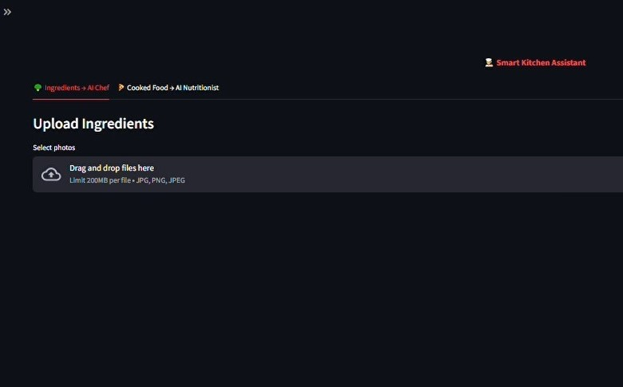
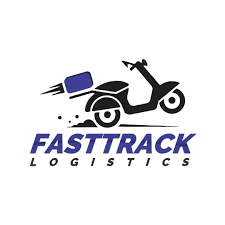
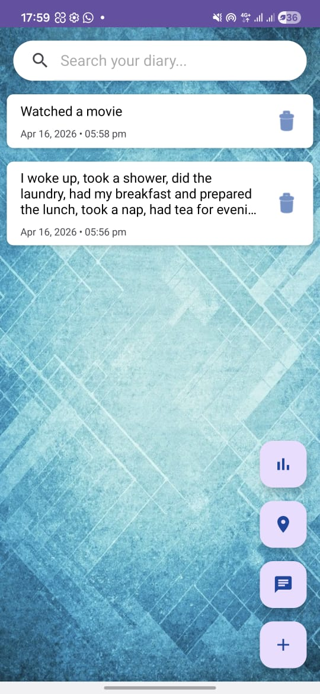
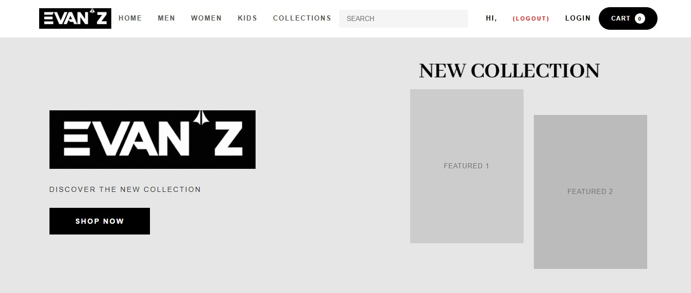

My Projects
Explore my latest work in AI, web development, and mobile applications

Smart Kitchen AI
A CNN-based food prediction system that identifies ingredients from images and suggests recipes using computer vision and deep learning.
Deshakthi Lanka System
A comprehensive management portal for foreign job vacancies, built for Deshakthi Lanka. Features user authentication, job posting management, and application tracking.

Fast Track Logistics
FastTrack Logistics is a robust desktop application developed in Java using the NetBeans IDE.

Virtual-Pal
An Android to-do list application that helps users organize daily tasks efficiently. Features include task creation, deadlines, priority levels, and reminder notifications.

EVANZ Clothing
A full-featured e-commerce website for a clothing brand. Includes product catalog, shopping cart, user accounts, order management, and secure checkout system.